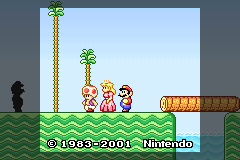
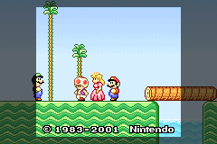

Super Mario Advance - Super Mario USA + Mario Brothers (Japan) (Virtual Console)
EEPROM 4K
Cartridge Identity
- Game Code
AMAJ(FamilyAMA)- Header Title
SUPER MARIOA- Maker / Revision
01/ rev0- ROM Size
- 4.0 MiB (4,194,304 B)
- Save Media
EEPROM 4K- SHA-256
4576e27e2a25b1ab84c800c37069d7c251c484850f55a318c3c0211689d27f77- Engine / SDK Group
comm-009(51 families)
Screenshots


Observed Battery Save Layout
- Fill Byte & Active Size
0x00fill · 239–239 / 512 B active (entropy 0.53 bits/B)- Active Offset Ranges
0x3–0x7,0x12–0x13,0x16–0x17,0x1F,0x9A–0x9B,0x9E–0x9F,0xA7,0x120–0x1FF(8 total)- ASCII Magic / Headers
JAMA- Observed Variable Regions
- 0 bytes across 0 spans: None
- Candidate Checksum/Counter Spans
- None
Hardware MMIO Subsystems
ppu_display0x8001b60,0x8001d5c
Regional Variants & Revisions (Family AMA)
- Chaoji Maliou 2 (China) (
AMAC, 4 MiB) - Super Mario Advance (USA, Europe) (
AMAE, 4 MiB) - Super Mario Advance (USA, Europe) (Virtual Console) (
AMAE, 4 MiB) - Super Mario Advance - Super Mario USA + Mario Brothers (Japan) (
AMAJ, 4 MiB)